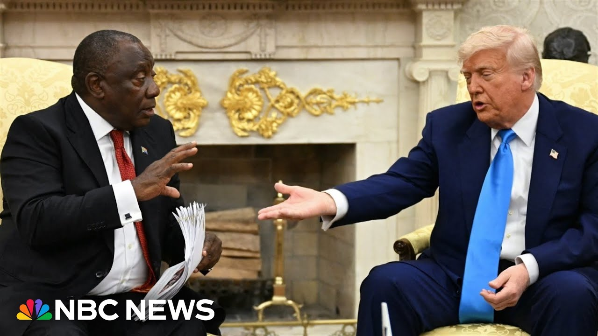

【特朗普在会见南非总统时指责南非实施“白人种族灭绝】
Summary: 直播报道特朗普总统与南非总统拉马福萨在椭圆形办公室的会晤，双方就“白人农场主种族灭绝”指控展开激烈交锋，现场气氛紧张且非典型。
摘要： Live coverage of President Trump's meeting with South African President Ramaphosa in the Oval Office, featuring heated exchanges over "white farmer genocide" accusations, with unusual tension and atypical dynamics.

⏱️ Estimated Reading Time: 6 min
You are watching live coverage in the Oval Office.
您正在观看椭圆形办公室的现场报道。
President Trump meeting with the president of South Africa.
特朗普总统正与南非总统会晤。
Seated seated beside him here, Serio Ramposa.
坐在他身旁的是南非总统西里尔·拉马福萨。
Uh I want to bring in our senior Washington correspondent, Hi Jackson, who's been watching along with us.
现在请我们的资深华盛顿记者杰克逊加入讨论，他一直与我们一同关注此事。
Uh hi, another extraordinary meeting inside the Oval Office talking about a difficult topic.
又一次非同寻常的椭圆形办公室会晤，讨论一个棘手话题。
Accusations that the White House, this administration has made about genocide of white South African farmers.
白宫指控南非政府对白人农场主实施种族灭绝。
an accusation that obviously m president President Ramaposa is pushing back against in this meeting today.
拉马福萨总统今日在会上明确反驳了这一指控。
Yeah, it's not quite a Zalinski level blow up when the of course president of Ukraine came in and there was that extraordinary moment in the Oval Office.
虽未达到乌克兰总统泽连斯基来访时的激烈程度，但现场仍充满意外对峙。
But I'll tell you what, it is certainly an unexpected confrontation here and the South African delegation seemed takenback candidly Aaron just by the reaction in the room.
南非代表团显然对现场反应感到措手不及。
We'll get more from inside the room.
我们将获取更多内部消息。
I'm sure you heard the voice of of our colleague there acting as pool, but um you heard some sort of awkward laughter and then silence frankly when President Trump and the Trump team there played this video.
特朗普团队播放视频时，现场出现尴尬笑声继而沉默。
Again, the president has has accused in recent months South Africa of genocide.
特朗普近月多次指控南非实施种族灭绝。
And you have heard the South African president pushing back very strongly on this, pointing to his agriculture minister who is speaking there, pointing to to a number of reasons why he says that is simply not true.
南非总统强烈反驳，并援引农业部长发言列举多项反驳依据。
Uh and yet this this confrontation here persists.
然而对峙仍在持续。
You get the impression that perhaps President Trump wanted this to happen as it is playing out.
特朗普似有意推动这一局面。
Wanted these potentially clearly uncomfortable moments here.
刻意制造这些明显尴尬的时刻。
There is a backdrop to this of course in that President Trump's close confidant has been for months now Elon Musk who's from South Africa who's also been outspoken and vocal on this.
背景是特朗普密友马斯克（南非裔）数月来持续公开表态支持此观点。
And it comes as the Trump administration has also even as they have essentially shut down the US to most refugees around the nation have opened US borders to uh white South Africans to come into the country here.
美国政府虽限制多数难民入境，却对南非白人开放边境。
So it is complicated geopolitically but in the room just some of these really stunning moments here uh between these two world leaders.
地缘政治复杂，但会场内两国领导人交锋令人震惊。
What's interesting here too the schedule was a little bit different than than we expected.
值得注意的是，日程安排与预期有所出入。
So you have to wonder how does this play out?
后续发展值得关注。
Do they end up having the rest of their meetings as is expected throughout the course of the afternoon or does this short circuit here Aaron and what we're watching play out live right here?
下午既定议程会否因此中断？
And the president of South Africa has made the effort a couple of times through the course of this meeting hie to to try to say you know what we want to have this conversation.
南非总统数次尝试缓和局面，表示愿展开对话。
We want to hear your concerns and talk about what they believe the South Africans government believes is the reality on the ground here trying to sort of wrap this up.
希望听取美方关切并讨论南非政府认知的实际情况。
Uh and yet we saw the president continue to reiterate his points here and he was asked by several of the reporters in the room whether there was something that he wanted to see South Africa South Africa's government do uh at this moment and he didn't really answer that question and you've heard the South African president and the leadership from South Africa there try to say listen to your point on the diplomacy that they seem to be trying to put forward here in the room Erin say hey like we let's talk about this we want to have this conversation and keep those those discussions going uh but the president is continuing to push on that.
特朗普持续重申立场，未回应记者关于对南非政府具体要求的提问，而南非方试图通过外交辞令推进对话。
He is taking some questions obviously from from in the room but clearly displeased with questions that do not relate to the topic that he wants to get into here which are these accusations of genocide.
特朗普回答部分提问，但明显不满非关种族灭绝指控的问题。
It's also interesting Erin listen you've been in these Oval Office sprays as they're called in in White House parliament.
椭圆形办公室的"喷雾会"（即媒体拍照环节）通常仅限领导人发言。
I've been in them.
我们曾多次参与此类场合。
You don't often hear from the folks on the couch especially not behind the couch as well some of the dele the members of these foreign delegations that come.
罕见有代表团成员（尤其是后排人员）发言。
It is typically of course the principal, the leader who is in that chair opposite the president who speaks.
通常只有与总统对坐的领导人发言。
So there's just a lot of very interesting moments here and we've seen of course the US delegation including Vice President Vance, you can't see it in this shot, but on the other side as well on the couch.
包括副总统万斯在内的美方代表团成员也在场。
So this is not it is fair and safe to say this is not typical.
本次会晤极不寻常。
This is not how typically these things normally go down.
完全不同于常规流程。
But this is a president who obviously is comfortable with the unprecedented and is looking to make a point here.
但特朗普素来打破常规，意在强调立场。
Thanks for watching.
感谢观看。
Stay updated about breaking news and top stories on the NBC News app or follow us on social media.
请通过NBC新闻应用或社交媒体获取最新突发新闻和头条故事。